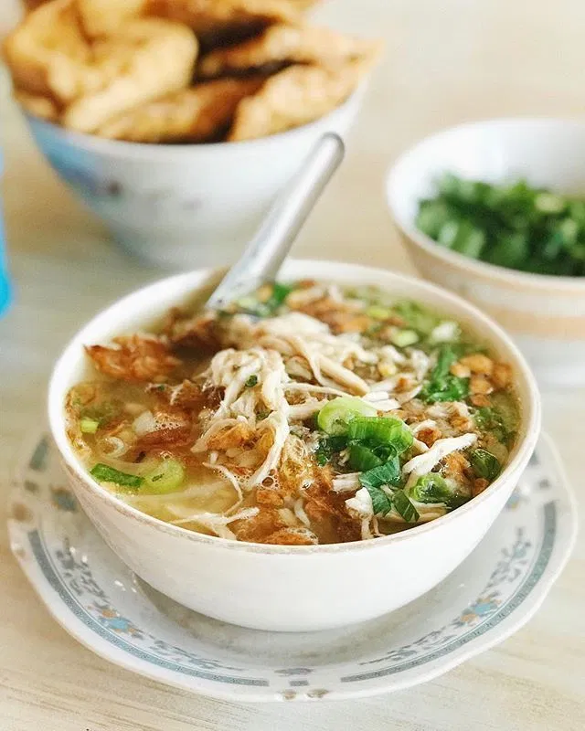

Soto Ayam
Soto ayam is a chicken noodle soup that popular in Malaysia and Indonesia. It is usually be serve with rice noodles or rice cakes for meal and easy to make. You can try an easy, authentic and the best soto ayam recipe here.

PREP TIME : 15 minutes
COOK TIME : 35 minutes
TOTAL TIME : 50 minutes
INGREDIENTS
- 1/2 pack (8 oz.) rice noodles
- 2 tablespoons cooking oil
- 1 skinless and boneless chicken breast, cut into cubes
- 1 stalk lemongrass, cut into 3 strips
- 1 can 13.5 fl oz. (400 ml) coconut milk
- 1 can 14.05 oz. (411 g) chicken broth
- 1 cup water
- salt, to taste
Spice taste :
- 1 teaspoon coriander seeds
- 1 teaspoon cumin seeds
- 4 shallots, peeled
- 3 cloves garlic, peeled
- 1 piece turmeric (2-inch), peeled or 1 tablespoon turmeric powder
- 1 piece (2-inch) galangal, peeled and sliced
- 1 piece (2-inch) ginger, peeled and sliced
- 1 tablespoon fresh lime juice
Toppings :
- 2 cups bean sprouts
- 2 cups sliced cabbages, optional
- 2 hard-boiled eggs, cut into wedges
- 1 stalk spring onion, cut into rounds
- 2 limes, cut into wedges
- Fried shallot crisps
INSTRUCTIONS
- Soak the rice noodles in warm water to soften them. Set aside.
- Blend the Spice Paste in a food processor. Add some water if needed.
- Add the oil in a pot on medium-high heat. Add in the Spice Paste and stir with spatula back and forth until aromatic.
- Add in the chicken broth, coconut milk, lemongrass and water. Bring it to a boil. Add in the chicken breast cubes. Cover the pot and simmer on low heat for 30 minutes. Add salt to taste.
- Blanch the rice noodles, bean sprouts, cabbages (if using) in another pot of boiling water. Transfer them to a bowl once they are cooked. Add the Toppings of hard-boiled eggs, spring onions and add the hot chicken broth into the bowl. Serve hot with lime wedges and shallots crisps on top of the noodles.
NOTES
This recipe yields 4 individual servings of Soto Ayam.